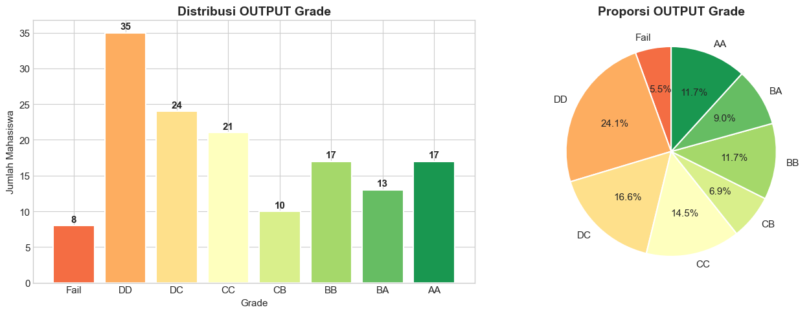
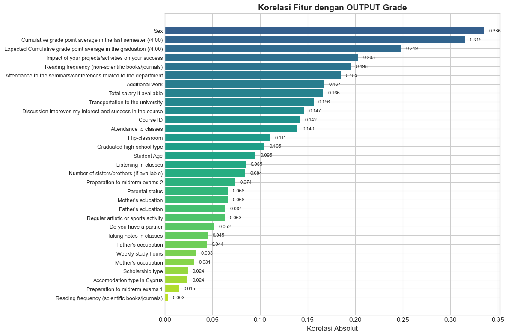
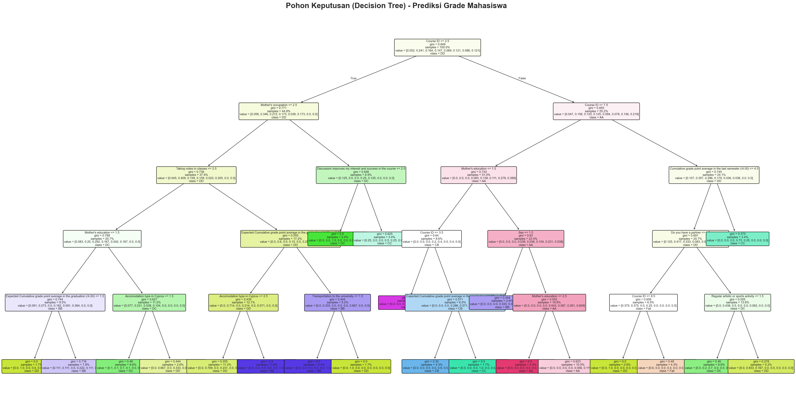
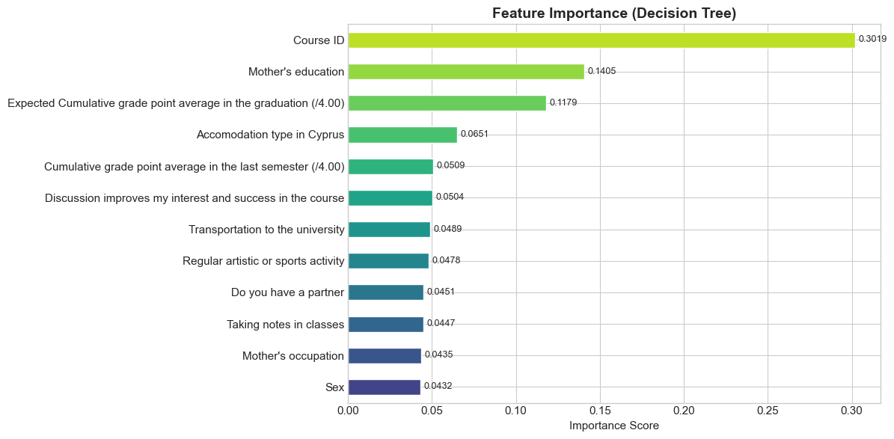
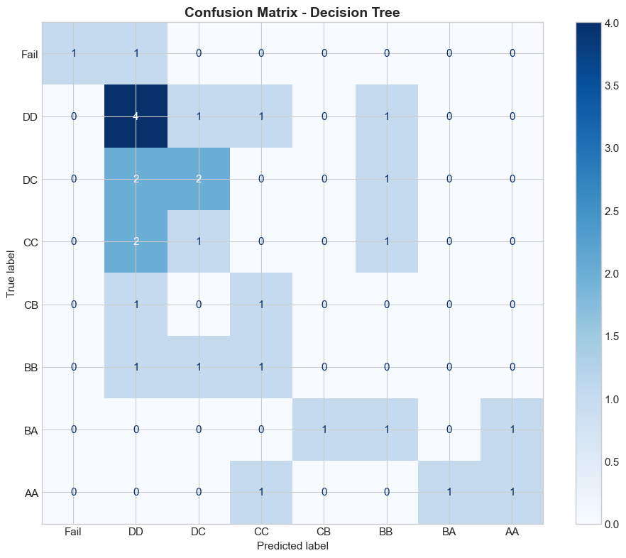

UAS Penambangan Data#
Higher Education Students Performance Evaluation#
Dataset: UCI Machine Learning Repository (ID: 856)
Tujuan: Melakukan analisis untuk menebak grade mahasiswa berdasarkan semua fitur performa menggunakan teknik Data Mining (Decision Tree).
Tahapan:
Import & Load Data
Exploratory Data Analysis (EDA)
Preprocessing (Cek Tipe Data)
Modeling (Decision Tree)
Evaluasi
Kesimpulan
1. Import Library & Load Dataset#
%pip install ucimlrepo
Note: you may need to restart the kernel to use updated packages.
[notice] A new release of pip is available: 25.2 -> 26.0.1
[notice] To update, run: c:\users\lenovo\appdata\local\programs\python\python39\python.exe -m pip install --upgrade pip
Collecting ucimlrepo
Using cached ucimlrepo-0.0.7-py3-none-any.whl.metadata (5.5 kB)
Requirement already satisfied: pandas>=1.0.0 in c:\users\lenovo\appdata\local\programs\python\python39\lib\site-packages (from ucimlrepo) (2.0.3)
Requirement already satisfied: certifi>=2020.12.5 in c:\users\lenovo\appdata\local\programs\python\python39\lib\site-packages (from ucimlrepo) (2026.1.4)
Requirement already satisfied: python-dateutil>=2.8.2 in c:\users\lenovo\appdata\local\programs\python\python39\lib\site-packages (from pandas>=1.0.0->ucimlrepo) (2.9.0.post0)
Requirement already satisfied: pytz>=2020.1 in c:\users\lenovo\appdata\local\programs\python\python39\lib\site-packages (from pandas>=1.0.0->ucimlrepo) (2025.2)
Requirement already satisfied: tzdata>=2022.1 in c:\users\lenovo\appdata\local\programs\python\python39\lib\site-packages (from pandas>=1.0.0->ucimlrepo) (2025.3)
Requirement already satisfied: numpy>=1.20.3 in c:\users\lenovo\appdata\local\programs\python\python39\lib\site-packages (from pandas>=1.0.0->ucimlrepo) (1.26.4)
Requirement already satisfied: six>=1.5 in c:\users\lenovo\appdata\local\programs\python\python39\lib\site-packages (from python-dateutil>=2.8.2->pandas>=1.0.0->ucimlrepo) (1.17.0)
Using cached ucimlrepo-0.0.7-py3-none-any.whl (8.0 kB)
Installing collected packages: ucimlrepo
Successfully installed ucimlrepo-0.0.7
import pandas as pd
import numpy as np
import matplotlib.pyplot as plt
import seaborn as sns
from ucimlrepo import fetch_ucirepo
import warnings
warnings.filterwarnings('ignore')
plt.style.use('seaborn-v0_8-whitegrid')
sns.set_palette('Set2')
plt.rcParams['figure.figsize'] = (12, 6)
plt.rcParams['font.size'] = 11
print("Semua library berhasil di-import!")
Semua library berhasil di-import!
# Fetch dataset dari UCI ML Repository
dataset = fetch_ucirepo(id=856)
X = dataset.data.features
y = dataset.data.targets
df = pd.concat([X, y], axis=1)
print(f"Dataset berhasil dimuat!")
print(f" Jumlah data : {df.shape[0]} baris")
print(f" Jumlah kolom : {df.shape[1]} kolom")
print(f" Features : {X.shape[1]}")
print(f" Target : OUTPUT Grade")
Dataset berhasil dimuat!
Jumlah data : 145 baris
Jumlah kolom : 32 kolom
Features : 31
Target : OUTPUT Grade
# Tampilkan 5 data pertama
df.head()
| Student Age | Sex | Graduated high-school type | Scholarship type | Additional work | Regular artistic or sports activity | Do you have a partner | Total salary if available | Transportation to the university | Accomodation type in Cyprus | ... | Preparation to midterm exams 1 | Preparation to midterm exams 2 | Taking notes in classes | Listening in classes | Discussion improves my interest and success in the course | Flip-classroom | Cumulative grade point average in the last semester (/4.00) | Expected Cumulative grade point average in the graduation (/4.00) | Course ID | OUTPUT Grade | |
|---|---|---|---|---|---|---|---|---|---|---|---|---|---|---|---|---|---|---|---|---|---|
| 0 | 2 | 2 | 3 | 3 | 1 | 2 | 2 | 1 | 1 | 1 | ... | 1 | 1 | 3 | 2 | 1 | 2 | 1 | 1 | 1 | 1 |
| 1 | 2 | 2 | 3 | 3 | 1 | 2 | 2 | 1 | 1 | 1 | ... | 1 | 1 | 3 | 2 | 3 | 2 | 2 | 3 | 1 | 1 |
| 2 | 2 | 2 | 2 | 3 | 2 | 2 | 2 | 2 | 4 | 2 | ... | 1 | 1 | 2 | 2 | 1 | 1 | 2 | 2 | 1 | 1 |
| 3 | 1 | 1 | 1 | 3 | 1 | 2 | 1 | 2 | 1 | 2 | ... | 1 | 2 | 3 | 2 | 2 | 1 | 3 | 2 | 1 | 1 |
| 4 | 2 | 2 | 1 | 3 | 2 | 2 | 1 | 3 | 1 | 4 | ... | 2 | 1 | 2 | 2 | 2 | 1 | 2 | 2 | 1 | 1 |
5 rows × 32 columns
# Info dataset
df.info()
<class 'pandas.core.frame.DataFrame'>
RangeIndex: 145 entries, 0 to 144
Data columns (total 32 columns):
# Column Non-Null Count Dtype
--- ------ -------------- -----
0 Student Age 145 non-null int64
1 Sex 145 non-null int64
2 Graduated high-school type 145 non-null int64
3 Scholarship type 145 non-null int64
4 Additional work 145 non-null int64
5 Regular artistic or sports activity 145 non-null int64
6 Do you have a partner 145 non-null int64
7 Total salary if available 145 non-null int64
8 Transportation to the university 145 non-null int64
9 Accomodation type in Cyprus 145 non-null int64
10 Mother's education 145 non-null int64
11 Father's education 145 non-null int64
12 Number of sisters/brothers (if available) 145 non-null int64
13 Parental status 145 non-null int64
14 Mother's occupation 145 non-null int64
15 Father's occupation 145 non-null int64
16 Weekly study hours 145 non-null int64
17 Reading frequency (non-scientific books/journals) 145 non-null int64
18 Reading frequency (scientific books/journals) 145 non-null int64
19 Attendance to the seminars/conferences related to the department 145 non-null int64
20 Impact of your projects/activities on your success 145 non-null int64
21 Attendance to classes 145 non-null int64
22 Preparation to midterm exams 1 145 non-null int64
23 Preparation to midterm exams 2 145 non-null int64
24 Taking notes in classes 145 non-null int64
25 Listening in classes 145 non-null int64
26 Discussion improves my interest and success in the course 145 non-null int64
27 Flip-classroom 145 non-null int64
28 Cumulative grade point average in the last semester (/4.00) 145 non-null int64
29 Expected Cumulative grade point average in the graduation (/4.00) 145 non-null int64
30 Course ID 145 non-null int64
31 OUTPUT Grade 145 non-null int64
dtypes: int64(32)
memory usage: 36.4 KB
# Statistik deskriptif
df.describe()
| Student Age | Sex | Graduated high-school type | Scholarship type | Additional work | Regular artistic or sports activity | Do you have a partner | Total salary if available | Transportation to the university | Accomodation type in Cyprus | ... | Preparation to midterm exams 1 | Preparation to midterm exams 2 | Taking notes in classes | Listening in classes | Discussion improves my interest and success in the course | Flip-classroom | Cumulative grade point average in the last semester (/4.00) | Expected Cumulative grade point average in the graduation (/4.00) | Course ID | OUTPUT Grade | |
|---|---|---|---|---|---|---|---|---|---|---|---|---|---|---|---|---|---|---|---|---|---|
| count | 145.000000 | 145.000000 | 145.000000 | 145.000000 | 145.000000 | 145.000000 | 145.000000 | 145.000000 | 145.000000 | 145.000000 | ... | 145.000000 | 145.000000 | 145.000000 | 145.000000 | 145.000000 | 145.000000 | 145.000000 | 145.000000 | 145.000000 | 145.000000 |
| mean | 1.620690 | 1.600000 | 1.944828 | 3.572414 | 1.662069 | 1.600000 | 1.579310 | 1.627586 | 1.620690 | 1.731034 | ... | 1.337931 | 1.165517 | 2.544828 | 2.055172 | 2.393103 | 1.806897 | 3.124138 | 2.724138 | 4.131034 | 3.227586 |
| std | 0.613154 | 0.491596 | 0.537216 | 0.805750 | 0.474644 | 0.491596 | 0.495381 | 1.020245 | 1.061112 | 0.783999 | ... | 0.614870 | 0.408483 | 0.564940 | 0.674736 | 0.604343 | 0.810492 | 1.301083 | 0.916536 | 3.260145 | 2.197678 |
| min | 1.000000 | 1.000000 | 1.000000 | 1.000000 | 1.000000 | 1.000000 | 1.000000 | 1.000000 | 1.000000 | 1.000000 | ... | 1.000000 | 1.000000 | 1.000000 | 1.000000 | 1.000000 | 1.000000 | 1.000000 | 1.000000 | 1.000000 | 0.000000 |
| 25% | 1.000000 | 1.000000 | 2.000000 | 3.000000 | 1.000000 | 1.000000 | 1.000000 | 1.000000 | 1.000000 | 1.000000 | ... | 1.000000 | 1.000000 | 2.000000 | 2.000000 | 2.000000 | 1.000000 | 2.000000 | 2.000000 | 1.000000 | 1.000000 |
| 50% | 2.000000 | 2.000000 | 2.000000 | 3.000000 | 2.000000 | 2.000000 | 2.000000 | 1.000000 | 1.000000 | 2.000000 | ... | 1.000000 | 1.000000 | 3.000000 | 2.000000 | 2.000000 | 2.000000 | 3.000000 | 3.000000 | 3.000000 | 3.000000 |
| 75% | 2.000000 | 2.000000 | 2.000000 | 4.000000 | 2.000000 | 2.000000 | 2.000000 | 2.000000 | 2.000000 | 2.000000 | ... | 2.000000 | 1.000000 | 3.000000 | 3.000000 | 3.000000 | 2.000000 | 4.000000 | 3.000000 | 7.000000 | 5.000000 |
| max | 3.000000 | 2.000000 | 3.000000 | 5.000000 | 2.000000 | 2.000000 | 2.000000 | 5.000000 | 4.000000 | 4.000000 | ... | 3.000000 | 3.000000 | 3.000000 | 3.000000 | 3.000000 | 3.000000 | 5.000000 | 4.000000 | 9.000000 | 7.000000 |
8 rows × 32 columns
2. Exploratory Data Analysis (EDA)#
2.1 Distribusi Target (OUTPUT Grade)#
# Mapping label grade
grade_labels = {0: 'Fail', 1: 'DD', 2: 'DC', 3: 'CC', 4: 'CB', 5: 'BB', 6: 'BA', 7: 'AA'}
df['Grade Label'] = df['OUTPUT Grade'].map(grade_labels)
fig, axes = plt.subplots(1, 2, figsize=(14, 5))
# Bar chart
grade_counts = df['OUTPUT Grade'].value_counts().sort_index()
colors = plt.cm.RdYlGn(np.linspace(0.2, 0.9, len(grade_counts)))
bars = axes[0].bar([grade_labels[i] for i in grade_counts.index], grade_counts.values, color=colors, edgecolor='white', linewidth=1.5)
axes[0].set_title('Distribusi OUTPUT Grade', fontsize=14, fontweight='bold')
axes[0].set_xlabel('Grade')
axes[0].set_ylabel('Jumlah Mahasiswa')
for bar, val in zip(bars, grade_counts.values):
axes[0].text(bar.get_x() + bar.get_width()/2, bar.get_height() + 0.5, str(val), ha='center', fontweight='bold')
# Pie chart
axes[1].pie(grade_counts.values, labels=[grade_labels[i] for i in grade_counts.index],
autopct='%1.1f%%', colors=colors, startangle=90, wedgeprops={'edgecolor': 'white', 'linewidth': 1.5})
axes[1].set_title('Proporsi OUTPUT Grade', fontsize=14, fontweight='bold')
plt.tight_layout()
plt.show()

2.2 Cek Missing Values & Duplicate#
# Cek missing values
print("=== Missing Values ===")
missing = df.isnull().sum()
print(f"Total missing values: {missing.sum()}")
print()
# Cek duplicate
print("=== Duplicate Data ===")
dup = df.duplicated().sum()
print(f"Jumlah data duplikat: {dup}")
=== Missing Values ===
Total missing values: 0
=== Duplicate Data ===
Jumlah data duplikat: 0
2.3 Korelasi Fitur dengan Target#
# Korelasi setiap fitur terhadap OUTPUT Grade
corr_matrix = df.drop(columns=['Grade Label']).corr()
target_corr = corr_matrix['OUTPUT Grade'].drop('OUTPUT Grade').abs().sort_values(ascending=False)
fig, ax = plt.subplots(figsize=(12, 8))
colors = plt.cm.viridis(np.linspace(0.3, 0.9, len(target_corr)))
bars = ax.barh(range(len(target_corr)), target_corr.values, color=colors)
ax.set_yticks(range(len(target_corr)))
ax.set_yticklabels(target_corr.index, fontsize=9)
ax.set_xlabel('Korelasi Absolut', fontsize=12)
ax.set_title('Korelasi Fitur dengan OUTPUT Grade', fontsize=14, fontweight='bold')
ax.invert_yaxis()
for i, v in enumerate(target_corr.values):
ax.text(v + 0.005, i, f'{v:.3f}', va='center', fontsize=8)
plt.tight_layout()
plt.show()

3. Preprocessing - Cek Tipe Data#
3.1 Analisis Tipe Data Setiap Fitur#
Sebelum melakukan modeling, kita harus memahami tipe data dari setiap fitur. Hal ini penting karena pemilihan algoritma dan preprocessing sangat bergantung pada jenis datanya.
# Cek tipe data dan nilai unik setiap kolom
print("=" * 90)
print(f"{'No':<4} {'Nama Fitur':<60} {'Tipe':<10} {'Unik':<6} {'Nilai Unik'}")
print("=" * 90)
feature_info = []
for i, col in enumerate(X.columns, 1):
dtype = str(X[col].dtype)
nunique = X[col].nunique()
unique_vals = sorted(X[col].unique())
# Tentukan jenis data berdasarkan karakteristik
if nunique <= 7:
jenis = "Kategorikal"
else:
jenis = "Numerik"
feature_info.append({
'Fitur': col,
'Tipe Python': dtype,
'Jenis Data': jenis,
'Nilai Unik': nunique,
'Range': f"{min(unique_vals)} - {max(unique_vals)}"
})
print(f"{i:<4} {col[:58]:<60} {dtype:<10} {nunique:<6} {unique_vals}")
print("=" * 90)
==========================================================================================
No Nama Fitur Tipe Unik Nilai Unik
==========================================================================================
1 Student Age int64 3 [1, 2, 3]
2 Sex int64 2 [1, 2]
3 Graduated high-school type int64 3 [1, 2, 3]
4 Scholarship type int64 5 [1, 2, 3, 4, 5]
5 Additional work int64 2 [1, 2]
6 Regular artistic or sports activity int64 2 [1, 2]
7 Do you have a partner int64 2 [1, 2]
8 Total salary if available int64 5 [1, 2, 3, 4, 5]
9 Transportation to the university int64 4 [1, 2, 3, 4]
10 Accomodation type in Cyprus int64 4 [1, 2, 3, 4]
11 Mother's education int64 6 [1, 2, 3, 4, 5, 6]
12 Father's education int64 6 [1, 2, 3, 4, 5, 6]
13 Number of sisters/brothers (if available) int64 5 [1, 2, 3, 4, 5]
14 Parental status int64 3 [1, 2, 3]
15 Mother's occupation int64 5 [1, 2, 3, 4, 5]
16 Father's occupation int64 5 [1, 2, 3, 4, 5]
17 Weekly study hours int64 5 [1, 2, 3, 4, 5]
18 Reading frequency (non-scientific books/journals) int64 3 [1, 2, 3]
19 Reading frequency (scientific books/journals) int64 3 [1, 2, 3]
20 Attendance to the seminars/conferences related to the depa int64 2 [1, 2]
21 Impact of your projects/activities on your success int64 3 [1, 2, 3]
22 Attendance to classes int64 2 [1, 2]
23 Preparation to midterm exams 1 int64 3 [1, 2, 3]
24 Preparation to midterm exams 2 int64 3 [1, 2, 3]
25 Taking notes in classes int64 3 [1, 2, 3]
26 Listening in classes int64 3 [1, 2, 3]
27 Discussion improves my interest and success in the course int64 3 [1, 2, 3]
28 Flip-classroom int64 3 [1, 2, 3]
29 Cumulative grade point average in the last semester (/4.00 int64 5 [1, 2, 3, 4, 5]
30 Expected Cumulative grade point average in the graduation int64 4 [1, 2, 3, 4]
31 Course ID int64 9 [1, 2, 3, 4, 5, 6, 7, 8, 9]
==========================================================================================
# Buat tabel ringkasan tipe data
info_df = pd.DataFrame(feature_info)
print("\nRINGKASAN TIPE DATA:")
print("-" * 50)
print(f"Jumlah fitur Kategorikal : {sum(1 for f in feature_info if f['Jenis Data'] == 'Kategorikal')}")
print(f"Jumlah fitur Numerik : {sum(1 for f in feature_info if f['Jenis Data'] == 'Numerik')}")
print()
display(info_df)
RINGKASAN TIPE DATA:
--------------------------------------------------
Jumlah fitur Kategorikal : 30
Jumlah fitur Numerik : 1
| Fitur | Tipe Python | Jenis Data | Nilai Unik | Range | |
|---|---|---|---|---|---|
| 0 | Student Age | int64 | Kategorikal | 3 | 1 - 3 |
| 1 | Sex | int64 | Kategorikal | 2 | 1 - 2 |
| 2 | Graduated high-school type | int64 | Kategorikal | 3 | 1 - 3 |
| 3 | Scholarship type | int64 | Kategorikal | 5 | 1 - 5 |
| 4 | Additional work | int64 | Kategorikal | 2 | 1 - 2 |
| 5 | Regular artistic or sports activity | int64 | Kategorikal | 2 | 1 - 2 |
| 6 | Do you have a partner | int64 | Kategorikal | 2 | 1 - 2 |
| 7 | Total salary if available | int64 | Kategorikal | 5 | 1 - 5 |
| 8 | Transportation to the university | int64 | Kategorikal | 4 | 1 - 4 |
| 9 | Accomodation type in Cyprus | int64 | Kategorikal | 4 | 1 - 4 |
| 10 | Mother's education | int64 | Kategorikal | 6 | 1 - 6 |
| 11 | Father's education | int64 | Kategorikal | 6 | 1 - 6 |
| 12 | Number of sisters/brothers (if available) | int64 | Kategorikal | 5 | 1 - 5 |
| 13 | Parental status | int64 | Kategorikal | 3 | 1 - 3 |
| 14 | Mother's occupation | int64 | Kategorikal | 5 | 1 - 5 |
| 15 | Father's occupation | int64 | Kategorikal | 5 | 1 - 5 |
| 16 | Weekly study hours | int64 | Kategorikal | 5 | 1 - 5 |
| 17 | Reading frequency (non-scientific books/journals) | int64 | Kategorikal | 3 | 1 - 3 |
| 18 | Reading frequency (scientific books/journals) | int64 | Kategorikal | 3 | 1 - 3 |
| 19 | Attendance to the seminars/conferences related... | int64 | Kategorikal | 2 | 1 - 2 |
| 20 | Impact of your projects/activities on your suc... | int64 | Kategorikal | 3 | 1 - 3 |
| 21 | Attendance to classes | int64 | Kategorikal | 2 | 1 - 2 |
| 22 | Preparation to midterm exams 1 | int64 | Kategorikal | 3 | 1 - 3 |
| 23 | Preparation to midterm exams 2 | int64 | Kategorikal | 3 | 1 - 3 |
| 24 | Taking notes in classes | int64 | Kategorikal | 3 | 1 - 3 |
| 25 | Listening in classes | int64 | Kategorikal | 3 | 1 - 3 |
| 26 | Discussion improves my interest and success in... | int64 | Kategorikal | 3 | 1 - 3 |
| 27 | Flip-classroom | int64 | Kategorikal | 3 | 1 - 3 |
| 28 | Cumulative grade point average in the last sem... | int64 | Kategorikal | 5 | 1 - 5 |
| 29 | Expected Cumulative grade point average in the... | int64 | Kategorikal | 4 | 1 - 4 |
| 30 | Course ID | int64 | Numerik | 9 | 1 - 9 |
3.2 Kesimpulan Tipe Data#
Dari analisis di atas, kita dapat melihat bahwa seluruh fitur bersifat kategorikal/ordinal yang sudah di-encode menjadi angka integer:
Jenis |
Penjelasan |
Contoh |
|---|---|---|
Nominal |
Kategori tanpa urutan |
Jenis kelamin (1=Female, 2=Male), Transportasi (1-4) |
Ordinal |
Kategori dengan urutan |
Umur (1=18-21, 2=22-25, 3=>26), Jam belajar (1-5), GPA (1-5) |
Implikasi untuk preprocessing:
Tidak perlu normalisasi (StandardScaler) karena angka hanyalah label, bukan nilai kontinu
Decision Tree cocok karena bekerja dengan split threshold pada setiap fitur secara independen
Tidak perlu encoding tambahan karena sudah dalam bentuk integer
# Pisahkan features dan target
X = df.drop(columns=['OUTPUT Grade', 'Grade Label'])
y = df['OUTPUT Grade']
print(f"Jumlah fitur : {X.shape[1]}")
print(f"Jumlah kelas : {y.nunique()} -> {sorted(y.unique())}")
print(f"Label kelas : {[grade_labels[i] for i in sorted(y.unique())]}")
print(f"\nDistribusi kelas target:")
print(y.value_counts().sort_index())
Jumlah fitur : 31
Jumlah kelas : 8 -> [0, 1, 2, 3, 4, 5, 6, 7]
Label kelas : ['Fail', 'DD', 'DC', 'CC', 'CB', 'BB', 'BA', 'AA']
Distribusi kelas target:
OUTPUT Grade
0 8
1 35
2 24
3 21
4 10
5 17
6 13
7 17
Name: count, dtype: int64
# Split data: 80% training, 20% testing
from sklearn.model_selection import train_test_split
X_train, X_test, y_train, y_test = train_test_split(
X, y, test_size=0.2, random_state=42, stratify=y
)
print(f"Data berhasil di-split!")
print(f" Training set : {X_train.shape[0]} data ({X_train.shape[0]/len(X)*100:.0f}%)")
print(f" Testing set : {X_test.shape[0]} data ({X_test.shape[0]/len(X)*100:.0f}%)")
print(f"\nTidak dilakukan normalisasi karena semua fitur bersifat kategorikal.")
Data berhasil di-split!
Training set : 116 data (80%)
Testing set : 29 data (20%)
Tidak dilakukan normalisasi karena semua fitur bersifat kategorikal.
4. Modeling - Decision Tree#
Mengapa Decision Tree?#
Decision Tree dipilih karena:
Cocok untuk data kategorikal - bekerja dengan split threshold tanpa perlu normalisasi
Mudah diinterpretasi - hasil berupa pohon keputusan yang bisa dibaca manusia
Menunjukkan alur logika - dari nilai fitur 1, fitur 2, dst. sampai menghasilkan prediksi grade
from sklearn.tree import DecisionTreeClassifier
from sklearn.metrics import classification_report, confusion_matrix, accuracy_score
# Training Decision Tree
dt_model = DecisionTreeClassifier(random_state=42, max_depth=5, min_samples_split=5)
dt_model.fit(X_train, y_train)
y_pred = dt_model.predict(X_test)
acc = accuracy_score(y_test, y_pred)
print(f"Decision Tree Accuracy: {acc:.4f} ({acc*100:.2f}%)")
print(f"\nClassification Report:")
print(classification_report(y_test, y_pred, target_names=[grade_labels[i] for i in sorted(y.unique())], zero_division=0))
Decision Tree Accuracy: 0.2759 (27.59%)
Classification Report:
precision recall f1-score support
Fail 1.00 0.50 0.67 2
DD 0.36 0.57 0.44 7
DC 0.40 0.40 0.40 5
CC 0.00 0.00 0.00 4
CB 0.00 0.00 0.00 2
BB 0.00 0.00 0.00 3
BA 0.00 0.00 0.00 3
AA 0.50 0.33 0.40 3
accuracy 0.28 29
macro avg 0.28 0.23 0.24 29
weighted avg 0.28 0.28 0.26 29
4.1 Visualisasi Pohon Keputusan (Decision Tree)#
from sklearn.tree import plot_tree
# Visualisasi Decision Tree
fig, ax = plt.subplots(figsize=(30, 15))
plot_tree(dt_model,
feature_names=X.columns.tolist(),
class_names=[grade_labels[i] for i in sorted(y.unique())],
filled=True,
rounded=True,
fontsize=8,
ax=ax,
proportion=True)
ax.set_title('Pohon Keputusan (Decision Tree) - Prediksi Grade Mahasiswa', fontsize=20, fontweight='bold', pad=20)
plt.tight_layout()
plt.show()
print("Cara membaca pohon:")
print(" - Setiap kotak (node) menunjukkan kondisi split pada fitur tertentu")
print(" - Cabang KIRI = kondisi terpenuhi (Ya)")
print(" - Cabang KANAN = kondisi tidak terpenuhi (Tidak)")
print(" - Warna menunjukkan kelas dominan di node tersebut")
print(" - Node paling bawah (leaf) = prediksi grade akhir")

Cara membaca pohon:
- Setiap kotak (node) menunjukkan kondisi split pada fitur tertentu
- Cabang KIRI = kondisi terpenuhi (Ya)
- Cabang KANAN = kondisi tidak terpenuhi (Tidak)
- Warna menunjukkan kelas dominan di node tersebut
- Node paling bawah (leaf) = prediksi grade akhir
4.2 Aturan Keputusan (Decision Rules) dalam Bentuk Teks#
from sklearn.tree import export_text
# Tampilkan aturan keputusan
print("Aturan Keputusan Decision Tree:")
print("=" * 70)
tree_rules = export_text(dt_model,
feature_names=X.columns.tolist(),
max_depth=10)
print(tree_rules)
Aturan Keputusan Decision Tree:
======================================================================
|--- Course ID <= 2.50
| |--- Mother's occupation <= 2.50
| | |--- Taking notes in classes <= 2.50
| | | |--- Mother's education <= 1.50
| | | | |--- Expected Cumulative grade point average in the graduation (/4.00) <= 1.50
| | | | | |--- class: 1
| | | | |--- Expected Cumulative grade point average in the graduation (/4.00) > 1.50
| | | | | |--- class: 5
| | | |--- Mother's education > 1.50
| | | | |--- Accomodation type in Cyprus <= 1.50
| | | | | |--- class: 2
| | | | |--- Accomodation type in Cyprus > 1.50
| | | | | |--- class: 1
| | |--- Taking notes in classes > 2.50
| | | |--- Expected Cumulative grade point average in the graduation (/4.00) <= 3.50
| | | | |--- Accomodation type in Cyprus <= 2.50
| | | | | |--- class: 1
| | | | |--- Accomodation type in Cyprus > 2.50
| | | | | |--- class: 5
| | | |--- Expected Cumulative grade point average in the graduation (/4.00) > 3.50
| | | | |--- Transportation to the university <= 1.50
| | | | | |--- class: 5
| | | | |--- Transportation to the university > 1.50
| | | | | |--- class: 1
| |--- Mother's occupation > 2.50
| | |--- Discussion improves my interest and success in the course <= 2.50
| | | |--- class: 2
| | |--- Discussion improves my interest and success in the course > 2.50
| | | |--- class: 3
|--- Course ID > 2.50
| |--- Course ID <= 7.50
| | |--- Mother's education <= 1.50
| | | |--- Course ID <= 3.50
| | | | |--- class: 6
| | | |--- Course ID > 3.50
| | | | |--- Expected Cumulative grade point average in the graduation (/4.00) <= 3.50
| | | | | |--- class: 4
| | | | |--- Expected Cumulative grade point average in the graduation (/4.00) > 3.50
| | | | | |--- class: 3
| | |--- Mother's education > 1.50
| | | |--- Sex <= 1.50
| | | | |--- class: 5
| | | |--- Sex > 1.50
| | | | |--- Mother's education <= 2.50
| | | | | |--- class: 7
| | | | |--- Mother's education > 2.50
| | | | | |--- class: 7
| |--- Course ID > 7.50
| | |--- Cumulative grade point average in the last semester (/4.00) <= 4.50
| | | |--- Do you have a partner <= 1.50
| | | | |--- Course ID <= 8.50
| | | | | |--- class: 1
| | | | |--- Course ID > 8.50
| | | | | |--- class: 0
| | | |--- Do you have a partner > 1.50
| | | | |--- Regular artistic or sports activity <= 1.50
| | | | | |--- class: 2
| | | | |--- Regular artistic or sports activity > 1.50
| | | | | |--- class: 1
| | |--- Cumulative grade point average in the last semester (/4.00) > 4.50
| | | |--- class: 3
4.3 Feature Importance#
# Fitur mana yang paling berpengaruh dalam Decision Tree
importances = dt_model.feature_importances_
feat_imp = pd.Series(importances, index=X.columns).sort_values(ascending=True)
# Hanya tampilkan fitur yang importance > 0
feat_imp_nonzero = feat_imp[feat_imp > 0]
fig, ax = plt.subplots(figsize=(12, max(6, len(feat_imp_nonzero) * 0.4)))
colors = plt.cm.viridis(np.linspace(0.2, 0.9, len(feat_imp_nonzero)))
feat_imp_nonzero.plot(kind='barh', ax=ax, color=colors, edgecolor='white')
ax.set_title('Feature Importance (Decision Tree)', fontsize=14, fontweight='bold')
ax.set_xlabel('Importance Score')
for i, v in enumerate(feat_imp_nonzero.values):
ax.text(v + 0.002, i, f'{v:.4f}', va='center', fontsize=9)
plt.tight_layout()
plt.show()
print(f"\nTotal fitur yang digunakan oleh pohon: {len(feat_imp_nonzero)} dari {len(feat_imp)}")
print(f"\nTop 5 Fitur Paling Penting:")
for i, (feat, val) in enumerate(feat_imp_nonzero.sort_values(ascending=False).head(5).items(), 1):
print(f" {i}. {feat}: {val:.4f}")

Total fitur yang digunakan oleh pohon: 12 dari 31
Top 5 Fitur Paling Penting:
1. Course ID: 0.3019
2. Mother's education: 0.1405
3. Expected Cumulative grade point average in the graduation (/4.00): 0.1179
4. Accomodation type in Cyprus: 0.0651
5. Cumulative grade point average in the last semester (/4.00): 0.0509
4.4 Simulasi Prediksi: Dari Nilai Fitur ke Grade#
Berikut simulasi bagaimana Decision Tree memprediksi grade mahasiswa. Setiap fitur ditampilkan beserta nilainya, lalu model menentukan grade berdasarkan aturan pohon keputusan.
# Ambil 5 sampel dari data test
np.random.seed(42)
sample_indices = np.random.choice(len(X_test), size=5, replace=False)
for idx_num, idx in enumerate(sample_indices, 1):
sample = X_test.iloc[idx]
sample_arr = sample.values.reshape(1, -1)
pred_grade = dt_model.predict(sample_arr)[0]
actual_grade = y_test.iloc[idx]
print(f"{'='*70}")
print(f"MAHASISWA SAMPEL #{idx_num}")
print(f"{'='*70}")
print(f"\nNilai Semua Fitur ({len(sample)} fitur):")
print(f"{'-'*70}")
for i, (feat_name, feat_val) in enumerate(sample.items(), 1):
print(f" {i:2d}. {feat_name[:55]:.<58s} {int(feat_val)}")
print(f"{'-'*70}")
print(f"\n -> Prediksi Model : Grade {pred_grade} ({grade_labels[pred_grade]})")
print(f" -> Grade Aktual : Grade {actual_grade} ({grade_labels[actual_grade]})")
match = 'BENAR' if pred_grade == actual_grade else 'SALAH'
print(f" -> Hasil : {match}")
print()
======================================================================
MAHASISWA SAMPEL #1
======================================================================
Nilai Semua Fitur (31 fitur):
----------------------------------------------------------------------
1. Student Age............................................... 1
2. Sex....................................................... 1
3. Graduated high-school type................................ 1
4. Scholarship type.......................................... 3
5. Additional work........................................... 1
6. Regular artistic or sports activity....................... 2
7. Do you have a partner..................................... 1
8. Total salary if available................................. 2
9. Transportation to the university.......................... 1
10. Accomodation type in Cyprus............................... 2
11. Mother's education........................................ 1
12. Father's education........................................ 2
13. Number of sisters/brothers (if available)................. 5
14. Parental status........................................... 1
15. Mother's occupation....................................... 2
16. Father's occupation....................................... 1
17. Weekly study hours........................................ 3
18. Reading frequency (non-scientific books/journals)......... 1
19. Reading frequency (scientific books/journals)............. 2
20. Attendance to the seminars/conferences related to the d... 1
21. Impact of your projects/activities on your success........ 1
22. Attendance to classes..................................... 1
23. Preparation to midterm exams 1............................ 1
24. Preparation to midterm exams 2............................ 2
25. Taking notes in classes................................... 3
26. Listening in classes...................................... 2
27. Discussion improves my interest and success in the cour... 2
28. Flip-classroom............................................ 1
29. Cumulative grade point average in the last semester (/4... 3
30. Expected Cumulative grade point average in the graduati... 2
31. Course ID................................................. 1
----------------------------------------------------------------------
-> Prediksi Model : Grade 1 (DD)
-> Grade Aktual : Grade 1 (DD)
-> Hasil : BENAR
======================================================================
MAHASISWA SAMPEL #2
======================================================================
Nilai Semua Fitur (31 fitur):
----------------------------------------------------------------------
1. Student Age............................................... 3
2. Sex....................................................... 2
3. Graduated high-school type................................ 2
4. Scholarship type.......................................... 3
5. Additional work........................................... 2
6. Regular artistic or sports activity....................... 2
7. Do you have a partner..................................... 1
8. Total salary if available................................. 3
9. Transportation to the university.......................... 1
10. Accomodation type in Cyprus............................... 1
11. Mother's education........................................ 1
12. Father's education........................................ 3
13. Number of sisters/brothers (if available)................. 5
14. Parental status........................................... 2
15. Mother's occupation....................................... 2
16. Father's occupation....................................... 1
17. Weekly study hours........................................ 3
18. Reading frequency (non-scientific books/journals)......... 2
19. Reading frequency (scientific books/journals)............. 2
20. Attendance to the seminars/conferences related to the d... 1
21. Impact of your projects/activities on your success........ 1
22. Attendance to classes..................................... 1
23. Preparation to midterm exams 1............................ 1
24. Preparation to midterm exams 2............................ 1
25. Taking notes in classes................................... 3
26. Listening in classes...................................... 2
27. Discussion improves my interest and success in the cour... 2
28. Flip-classroom............................................ 2
29. Cumulative grade point average in the last semester (/4... 5
30. Expected Cumulative grade point average in the graduati... 4
31. Course ID................................................. 1
----------------------------------------------------------------------
-> Prediksi Model : Grade 5 (BB)
-> Grade Aktual : Grade 3 (CC)
-> Hasil : SALAH
======================================================================
MAHASISWA SAMPEL #3
======================================================================
Nilai Semua Fitur (31 fitur):
----------------------------------------------------------------------
1. Student Age............................................... 2
2. Sex....................................................... 2
3. Graduated high-school type................................ 2
4. Scholarship type.......................................... 3
5. Additional work........................................... 2
6. Regular artistic or sports activity....................... 1
7. Do you have a partner..................................... 2
8. Total salary if available................................. 1
9. Transportation to the university.......................... 4
10. Accomodation type in Cyprus............................... 2
11. Mother's education........................................ 4
12. Father's education........................................ 4
13. Number of sisters/brothers (if available)................. 2
14. Parental status........................................... 1
15. Mother's occupation....................................... 3
16. Father's occupation....................................... 1
17. Weekly study hours........................................ 2
18. Reading frequency (non-scientific books/journals)......... 2
19. Reading frequency (scientific books/journals)............. 1
20. Attendance to the seminars/conferences related to the d... 1
21. Impact of your projects/activities on your success........ 1
22. Attendance to classes..................................... 1
23. Preparation to midterm exams 1............................ 1
24. Preparation to midterm exams 2............................ 1
25. Taking notes in classes................................... 2
26. Listening in classes...................................... 1
27. Discussion improves my interest and success in the cour... 3
28. Flip-classroom............................................ 1
29. Cumulative grade point average in the last semester (/4... 2
30. Expected Cumulative grade point average in the graduati... 3
31. Course ID................................................. 1
----------------------------------------------------------------------
-> Prediksi Model : Grade 3 (CC)
-> Grade Aktual : Grade 1 (DD)
-> Hasil : SALAH
======================================================================
MAHASISWA SAMPEL #4
======================================================================
Nilai Semua Fitur (31 fitur):
----------------------------------------------------------------------
1. Student Age............................................... 3
2. Sex....................................................... 2
3. Graduated high-school type................................ 2
4. Scholarship type.......................................... 3
5. Additional work........................................... 2
6. Regular artistic or sports activity....................... 2
7. Do you have a partner..................................... 1
8. Total salary if available................................. 1
9. Transportation to the university.......................... 4
10. Accomodation type in Cyprus............................... 2
11. Mother's education........................................ 2
12. Father's education........................................ 2
13. Number of sisters/brothers (if available)................. 4
14. Parental status........................................... 1
15. Mother's occupation....................................... 2
16. Father's occupation....................................... 1
17. Weekly study hours........................................ 2
18. Reading frequency (non-scientific books/journals)......... 2
19. Reading frequency (scientific books/journals)............. 2
20. Attendance to the seminars/conferences related to the d... 1
21. Impact of your projects/activities on your success........ 1
22. Attendance to classes..................................... 1
23. Preparation to midterm exams 1............................ 1
24. Preparation to midterm exams 2............................ 1
25. Taking notes in classes................................... 3
26. Listening in classes...................................... 2
27. Discussion improves my interest and success in the cour... 3
28. Flip-classroom............................................ 3
29. Cumulative grade point average in the last semester (/4... 5
30. Expected Cumulative grade point average in the graduati... 4
31. Course ID................................................. 1
----------------------------------------------------------------------
-> Prediksi Model : Grade 1 (DD)
-> Grade Aktual : Grade 3 (CC)
-> Hasil : SALAH
======================================================================
MAHASISWA SAMPEL #5
======================================================================
Nilai Semua Fitur (31 fitur):
----------------------------------------------------------------------
1. Student Age............................................... 1
2. Sex....................................................... 2
3. Graduated high-school type................................ 2
4. Scholarship type.......................................... 4
5. Additional work........................................... 1
6. Regular artistic or sports activity....................... 1
7. Do you have a partner..................................... 2
8. Total salary if available................................. 1
9. Transportation to the university.......................... 1
10. Accomodation type in Cyprus............................... 1
11. Mother's education........................................ 2
12. Father's education........................................ 2
13. Number of sisters/brothers (if available)................. 4
14. Parental status........................................... 1
15. Mother's occupation....................................... 2
16. Father's occupation....................................... 4
17. Weekly study hours........................................ 2
18. Reading frequency (non-scientific books/journals)......... 3
19. Reading frequency (scientific books/journals)............. 2
20. Attendance to the seminars/conferences related to the d... 1
21. Impact of your projects/activities on your success........ 1
22. Attendance to classes..................................... 2
23. Preparation to midterm exams 1............................ 1
24. Preparation to midterm exams 2............................ 2
25. Taking notes in classes................................... 2
26. Listening in classes...................................... 1
27. Discussion improves my interest and success in the cour... 3
28. Flip-classroom............................................ 1
29. Cumulative grade point average in the last semester (/4... 3
30. Expected Cumulative grade point average in the graduati... 3
31. Course ID................................................. 7
----------------------------------------------------------------------
-> Prediksi Model : Grade 7 (AA)
-> Grade Aktual : Grade 7 (AA)
-> Hasil : BENAR
4.5 Jalur Keputusan (Decision Path)#
Bagian ini menunjukkan step-by-step bagaimana Decision Tree mengambil keputusan untuk setiap mahasiswa:
Di setiap node, pohon mengecek satu fitur
Jika kondisi terpenuhi, belok KIRI; jika tidak, belok KANAN
Sampai akhirnya mencapai node akhir (leaf) yang berisi prediksi grade
# Tampilkan jalur keputusan step-by-step
def tampilkan_jalur_keputusan(model, sample_arr, feature_names, class_names):
tree = model.tree_
node_indicator = model.decision_path(sample_arr)
node_indices = node_indicator.indices
steps = []
for node_id in node_indices:
if tree.children_left[node_id] != tree.children_right[node_id]:
feature_idx = tree.feature[node_id]
threshold = tree.threshold[node_id]
feat_name = feature_names[feature_idx]
feat_value = sample_arr[0][feature_idx]
if feat_value <= threshold:
arah = "Ya -> KIRI"
else:
arah = "Tidak -> KANAN"
steps.append(f" Apakah '{feat_name}' <= {threshold:.1f}? (Nilai: {feat_value:.0f}) => {arah}")
else:
predicted_class = np.argmax(tree.value[node_id])
steps.append(f" >> HASIL: Grade {class_names[predicted_class]}")
return steps
for idx_num, idx in enumerate(sample_indices[:3], 1):
sample = X_test.iloc[idx]
sample_arr = sample.values.reshape(1, -1)
pred = dt_model.predict(sample_arr)[0]
actual = y_test.iloc[idx]
print(f"{'='*75}")
print(f"JALUR KEPUTUSAN - Mahasiswa Sampel #{idx_num}")
print(f"Aktual: {grade_labels[actual]} | Prediksi: {grade_labels[pred]}")
print(f"{'='*75}")
steps = tampilkan_jalur_keputusan(
dt_model, sample_arr,
X.columns.tolist(),
[grade_labels[i] for i in sorted(y.unique())]
)
for step_num, step in enumerate(steps, 1):
if step.startswith(" >>"):
print(f"\n Step {step_num}: {step}")
else:
print(f" Step {step_num}: {step}")
print()
===========================================================================
JALUR KEPUTUSAN - Mahasiswa Sampel #1
Aktual: DD | Prediksi: DD
===========================================================================
Step 1: Apakah 'Course ID' <= 2.5? (Nilai: 1) => Ya -> KIRI
Step 2: Apakah 'Mother's occupation' <= 2.5? (Nilai: 2) => Ya -> KIRI
Step 3: Apakah 'Taking notes in classes' <= 2.5? (Nilai: 3) => Tidak -> KANAN
Step 4: Apakah 'Expected Cumulative grade point average in the graduation (/4.00)' <= 3.5? (Nilai: 2) => Ya -> KIRI
Step 5: Apakah 'Accomodation type in Cyprus' <= 2.5? (Nilai: 2) => Ya -> KIRI
Step 6: >> HASIL: Grade DD
===========================================================================
JALUR KEPUTUSAN - Mahasiswa Sampel #2
Aktual: CC | Prediksi: BB
===========================================================================
Step 1: Apakah 'Course ID' <= 2.5? (Nilai: 1) => Ya -> KIRI
Step 2: Apakah 'Mother's occupation' <= 2.5? (Nilai: 2) => Ya -> KIRI
Step 3: Apakah 'Taking notes in classes' <= 2.5? (Nilai: 3) => Tidak -> KANAN
Step 4: Apakah 'Expected Cumulative grade point average in the graduation (/4.00)' <= 3.5? (Nilai: 4) => Tidak -> KANAN
Step 5: Apakah 'Transportation to the university' <= 1.5? (Nilai: 1) => Ya -> KIRI
Step 6: >> HASIL: Grade BB
===========================================================================
JALUR KEPUTUSAN - Mahasiswa Sampel #3
Aktual: DD | Prediksi: CC
===========================================================================
Step 1: Apakah 'Course ID' <= 2.5? (Nilai: 1) => Ya -> KIRI
Step 2: Apakah 'Mother's occupation' <= 2.5? (Nilai: 3) => Tidak -> KANAN
Step 3: Apakah 'Discussion improves my interest and success in the course' <= 2.5? (Nilai: 3) => Tidak -> KANAN
Step 4: >> HASIL: Grade CC
5. Evaluasi Model#
5.1 Confusion Matrix#
from sklearn.metrics import ConfusionMatrixDisplay
fig, ax = plt.subplots(figsize=(10, 8))
grade_names = [grade_labels[i] for i in sorted(y.unique())]
cm = confusion_matrix(y_test, y_pred)
disp = ConfusionMatrixDisplay(confusion_matrix=cm, display_labels=grade_names)
disp.plot(ax=ax, cmap='Blues', values_format='d')
ax.set_title('Confusion Matrix - Decision Tree', fontsize=14, fontweight='bold')
plt.tight_layout()
plt.show()
print("Cara membaca Confusion Matrix:")
print(" - Diagonal (kiri atas ke kanan bawah) = prediksi BENAR")
print(" - Di luar diagonal = prediksi SALAH")

Cara membaca Confusion Matrix:
- Diagonal (kiri atas ke kanan bawah) = prediksi BENAR
- Di luar diagonal = prediksi SALAH
5.2 Metrik Evaluasi Detail#
from sklearn.metrics import precision_score, recall_score, f1_score
print("EVALUASI MODEL DECISION TREE")
print("=" * 50)
print(f"Accuracy : {accuracy_score(y_test, y_pred):.4f}")
print(f"Precision : {precision_score(y_test, y_pred, average='macro', zero_division=0):.4f} (macro)")
print(f"Recall : {recall_score(y_test, y_pred, average='macro', zero_division=0):.4f} (macro)")
print(f"F1-Score : {f1_score(y_test, y_pred, average='macro', zero_division=0):.4f} (macro)")
print(f"\nDetail per kelas:")
print(classification_report(y_test, y_pred, target_names=[grade_labels[i] for i in sorted(y.unique())], zero_division=0))
EVALUASI MODEL DECISION TREE
==================================================
Accuracy : 0.2759
Precision : 0.2830 (macro)
Recall : 0.2256 (macro)
F1-Score : 0.2389 (macro)
Detail per kelas:
precision recall f1-score support
Fail 1.00 0.50 0.67 2
DD 0.36 0.57 0.44 7
DC 0.40 0.40 0.40 5
CC 0.00 0.00 0.00 4
CB 0.00 0.00 0.00 2
BB 0.00 0.00 0.00 3
BA 0.00 0.00 0.00 3
AA 0.50 0.33 0.40 3
accuracy 0.28 29
macro avg 0.28 0.23 0.24 29
weighted avg 0.28 0.28 0.26 29
5.3 Tabel Prediksi Semua Data Test (Semua Fitur)#
# Tabel lengkap: semua fitur + prediksi
pred_df = X_test.copy()
pred_df['Grade Aktual'] = [grade_labels[g] for g in y_test.values]
pred_df['Grade Prediksi'] = [grade_labels[g] for g in y_pred]
pred_df['Status'] = ['Benar' if a == p else 'Salah' for a, p in zip(y_test.values, y_pred)]
pd.set_option('display.max_columns', None)
pd.set_option('display.width', None)
pd.set_option('display.max_colwidth', 45)
print("Tabel Prediksi dengan SEMUA FITUR:")
print("=" * 100)
display(pred_df)
correct = sum(1 for a, p in zip(y_test.values, y_pred) if a == p)
total = len(y_test)
print(f"\nHasil: {correct}/{total} prediksi benar ({correct/total*100:.1f}%)")
Tabel Prediksi dengan SEMUA FITUR:
====================================================================================================
| Student Age | Sex | Graduated high-school type | Scholarship type | Additional work | Regular artistic or sports activity | Do you have a partner | Total salary if available | Transportation to the university | Accomodation type in Cyprus | Mother's education | Father's education | Number of sisters/brothers (if available) | Parental status | Mother's occupation | Father's occupation | Weekly study hours | Reading frequency (non-scientific books/journals) | Reading frequency (scientific books/journals) | Attendance to the seminars/conferences related to the department | Impact of your projects/activities on your success | Attendance to classes | Preparation to midterm exams 1 | Preparation to midterm exams 2 | Taking notes in classes | Listening in classes | Discussion improves my interest and success in the course | Flip-classroom | Cumulative grade point average in the last semester (/4.00) | Expected Cumulative grade point average in the graduation (/4.00) | Course ID | Grade Aktual | Grade Prediksi | Status | |
|---|---|---|---|---|---|---|---|---|---|---|---|---|---|---|---|---|---|---|---|---|---|---|---|---|---|---|---|---|---|---|---|---|---|---|
| 141 | 1 | 1 | 2 | 4 | 2 | 2 | 2 | 1 | 4 | 2 | 1 | 1 | 5 | 1 | 2 | 1 | 3 | 2 | 2 | 2 | 1 | 2 | 1 | 1 | 3 | 2 | 2 | 1 | 5 | 3 | 9 | BB | CC | Salah |
| 59 | 2 | 2 | 2 | 3 | 2 | 1 | 1 | 1 | 1 | 1 | 4 | 4 | 3 | 1 | 2 | 3 | 3 | 2 | 2 | 1 | 1 | 1 | 1 | 1 | 3 | 3 | 2 | 2 | 4 | 3 | 1 | BB | DD | Salah |
| 33 | 2 | 1 | 2 | 3 | 1 | 2 | 1 | 1 | 1 | 1 | 1 | 2 | 5 | 1 | 2 | 3 | 2 | 1 | 2 | 1 | 1 | 1 | 1 | 1 | 1 | 3 | 2 | 2 | 2 | 3 | 1 | DC | BB | Salah |
| 43 | 1 | 2 | 2 | 3 | 2 | 2 | 1 | 1 | 1 | 1 | 2 | 3 | 3 | 1 | 2 | 1 | 2 | 2 | 2 | 1 | 1 | 2 | 1 | 1 | 3 | 1 | 3 | 3 | 3 | 2 | 1 | CB | DD | Salah |
| 52 | 2 | 1 | 2 | 3 | 1 | 2 | 2 | 2 | 1 | 1 | 1 | 3 | 4 | 1 | 2 | 1 | 3 | 1 | 1 | 1 | 1 | 1 | 1 | 2 | 2 | 2 | 2 | 1 | 4 | 2 | 1 | DD | BB | Salah |
| 29 | 2 | 2 | 3 | 4 | 2 | 2 | 2 | 1 | 4 | 2 | 3 | 3 | 2 | 1 | 4 | 1 | 2 | 2 | 2 | 1 | 1 | 1 | 1 | 1 | 3 | 2 | 2 | 2 | 4 | 3 | 1 | BB | DC | Salah |
| 130 | 1 | 1 | 2 | 3 | 1 | 1 | 2 | 1 | 1 | 1 | 1 | 2 | 3 | 1 | 2 | 4 | 4 | 2 | 2 | 2 | 1 | 1 | 1 | 2 | 3 | 1 | 3 | 2 | 2 | 3 | 9 | DD | DC | Salah |
| 48 | 1 | 2 | 2 | 3 | 2 | 1 | 1 | 1 | 1 | 2 | 3 | 3 | 3 | 1 | 2 | 2 | 1 | 1 | 2 | 1 | 1 | 1 | 1 | 1 | 3 | 2 | 3 | 2 | 2 | 2 | 1 | DD | DD | Benar |
| 105 | 1 | 2 | 2 | 4 | 1 | 1 | 2 | 1 | 1 | 1 | 2 | 2 | 4 | 1 | 2 | 4 | 2 | 3 | 2 | 1 | 1 | 2 | 1 | 2 | 2 | 1 | 3 | 1 | 3 | 3 | 7 | AA | AA | Benar |
| 64 | 2 | 2 | 3 | 5 | 2 | 2 | 2 | 1 | 1 | 1 | 2 | 2 | 2 | 1 | 2 | 1 | 1 | 2 | 2 | 1 | 3 | 1 | 2 | 1 | 3 | 2 | 3 | 1 | 4 | 3 | 1 | CC | DD | Salah |
| 103 | 1 | 2 | 1 | 4 | 2 | 2 | 1 | 5 | 1 | 2 | 1 | 3 | 4 | 1 | 2 | 1 | 2 | 3 | 2 | 1 | 1 | 1 | 1 | 1 | 2 | 2 | 3 | 2 | 4 | 4 | 7 | AA | CC | Salah |
| 18 | 1 | 1 | 2 | 4 | 2 | 2 | 2 | 3 | 1 | 1 | 2 | 2 | 5 | 1 | 2 | 5 | 5 | 3 | 2 | 2 | 1 | 2 | 1 | 1 | 3 | 1 | 3 | 3 | 3 | 3 | 1 | DC | DD | Salah |
| 42 | 2 | 2 | 2 | 3 | 2 | 1 | 2 | 1 | 4 | 2 | 4 | 4 | 2 | 1 | 3 | 1 | 2 | 2 | 1 | 1 | 1 | 1 | 1 | 1 | 2 | 1 | 3 | 1 | 2 | 3 | 1 | DD | CC | Salah |
| 75 | 1 | 2 | 2 | 4 | 2 | 1 | 2 | 1 | 1 | 3 | 1 | 5 | 4 | 1 | 2 | 2 | 3 | 3 | 1 | 1 | 1 | 1 | 1 | 1 | 2 | 2 | 2 | 2 | 4 | 1 | 3 | AA | BA | Salah |
| 14 | 3 | 2 | 2 | 4 | 1 | 1 | 2 | 3 | 4 | 2 | 3 | 1 | 2 | 1 | 4 | 1 | 2 | 2 | 2 | 1 | 1 | 1 | 1 | 1 | 2 | 3 | 2 | 1 | 4 | 4 | 1 | DC | DC | Benar |
| 91 | 2 | 2 | 2 | 5 | 1 | 1 | 1 | 1 | 1 | 2 | 4 | 1 | 5 | 1 | 2 | 3 | 2 | 2 | 2 | 1 | 1 | 1 | 1 | 1 | 2 | 3 | 3 | 2 | 5 | 4 | 6 | BA | AA | Salah |
| 58 | 3 | 2 | 2 | 3 | 2 | 2 | 1 | 3 | 1 | 1 | 1 | 3 | 5 | 2 | 2 | 1 | 3 | 2 | 2 | 1 | 1 | 1 | 1 | 1 | 3 | 2 | 2 | 2 | 5 | 4 | 1 | CC | BB | Salah |
| 67 | 2 | 2 | 3 | 3 | 1 | 1 | 2 | 3 | 1 | 2 | 3 | 4 | 4 | 2 | 2 | 2 | 2 | 2 | 2 | 1 | 1 | 2 | 1 | 1 | 2 | 2 | 1 | 2 | 2 | 3 | 2 | DD | DD | Benar |
| 112 | 2 | 1 | 3 | 3 | 1 | 2 | 2 | 1 | 3 | 3 | 1 | 1 | 2 | 1 | 2 | 1 | 1 | 1 | 1 | 2 | 3 | 1 | 2 | 1 | 3 | 3 | 3 | 1 | 4 | 2 | 8 | DC | DD | Salah |
| 108 | 2 | 1 | 1 | 5 | 2 | 1 | 2 | 2 | 2 | 1 | 1 | 2 | 1 | 3 | 1 | 5 | 3 | 3 | 2 | 1 | 1 | 2 | 1 | 1 | 2 | 3 | 1 | 2 | 3 | 3 | 7 | BA | CB | Salah |
| 128 | 1 | 1 | 2 | 4 | 2 | 1 | 1 | 1 | 4 | 3 | 3 | 4 | 2 | 1 | 4 | 2 | 2 | 1 | 1 | 2 | 1 | 1 | 1 | 1 | 3 | 2 | 2 | 1 | 2 | 2 | 9 | Fail | Fail | Benar |
| 121 | 2 | 1 | 2 | 3 | 1 | 1 | 1 | 1 | 2 | 1 | 1 | 1 | 5 | 3 | 2 | 4 | 5 | 3 | 3 | 1 | 3 | 1 | 2 | 1 | 1 | 1 | 1 | 1 | 1 | 1 | 8 | Fail | DD | Salah |
| 28 | 3 | 2 | 2 | 3 | 2 | 2 | 1 | 1 | 4 | 2 | 2 | 2 | 4 | 1 | 2 | 1 | 2 | 2 | 2 | 1 | 1 | 1 | 1 | 1 | 3 | 2 | 3 | 3 | 5 | 4 | 1 | CC | DD | Salah |
| 131 | 1 | 1 | 1 | 5 | 2 | 1 | 2 | 1 | 2 | 2 | 4 | 3 | 1 | 1 | 3 | 2 | 4 | 1 | 3 | 2 | 1 | 1 | 1 | 2 | 3 | 2 | 3 | 1 | 5 | 3 | 9 | CB | CC | Salah |
| 90 | 2 | 1 | 2 | 3 | 2 | 1 | 1 | 1 | 2 | 3 | 3 | 3 | 1 | 1 | 4 | 2 | 2 | 2 | 2 | 1 | 1 | 1 | 1 | 1 | 2 | 3 | 2 | 3 | 4 | 2 | 6 | BA | BB | Salah |
| 129 | 1 | 1 | 2 | 3 | 1 | 1 | 2 | 1 | 1 | 1 | 1 | 1 | 3 | 1 | 2 | 4 | 4 | 2 | 3 | 2 | 1 | 1 | 2 | 2 | 3 | 2 | 3 | 2 | 2 | 3 | 9 | CC | DC | Salah |
| 26 | 2 | 2 | 2 | 3 | 2 | 1 | 1 | 1 | 1 | 1 | 4 | 4 | 4 | 1 | 2 | 4 | 2 | 3 | 2 | 1 | 1 | 1 | 1 | 1 | 3 | 3 | 3 | 2 | 2 | 1 | 1 | DD | DD | Benar |
| 3 | 1 | 1 | 1 | 3 | 1 | 2 | 1 | 2 | 1 | 2 | 1 | 2 | 5 | 1 | 2 | 1 | 3 | 1 | 2 | 1 | 1 | 1 | 1 | 2 | 3 | 2 | 2 | 1 | 3 | 2 | 1 | DD | DD | Benar |
| 60 | 2 | 1 | 2 | 3 | 2 | 2 | 2 | 5 | 2 | 1 | 6 | 1 | 3 | 1 | 2 | 3 | 1 | 2 | 2 | 1 | 1 | 1 | 1 | 1 | 1 | 3 | 3 | 1 | 2 | 1 | 1 | DC | DC | Benar |
Hasil: 8/29 prediksi benar (27.6%)
# Detail per mahasiswa (format vertikal)
print("DETAIL PER MAHASISWA (5 sampel):")
print()
for row_num, (idx, row) in enumerate(pred_df.head(5).iterrows(), 1):
print(f"{'='*70}")
print(f"MAHASISWA #{row_num}")
print(f"{'='*70}")
feat_cols = [c for c in pred_df.columns if c not in ['Grade Aktual', 'Grade Prediksi', 'Status']]
print(f"\nSemua Fitur ({len(feat_cols)} fitur):")
print(f"{'-'*70}")
for i, col in enumerate(feat_cols, 1):
print(f" {i:2d}. {col[:55]:.<58s} {int(row[col])}")
print(f"{'-'*70}")
print(f" -> Grade Aktual : {row['Grade Aktual']}")
print(f" -> Grade Prediksi : {row['Grade Prediksi']}")
print(f" -> Status : {row['Status']}")
print()
DETAIL PER MAHASISWA (5 sampel):
======================================================================
MAHASISWA #1
======================================================================
Semua Fitur (31 fitur):
----------------------------------------------------------------------
1. Student Age............................................... 1
2. Sex....................................................... 1
3. Graduated high-school type................................ 2
4. Scholarship type.......................................... 4
5. Additional work........................................... 2
6. Regular artistic or sports activity....................... 2
7. Do you have a partner..................................... 2
8. Total salary if available................................. 1
9. Transportation to the university.......................... 4
10. Accomodation type in Cyprus............................... 2
11. Mother's education........................................ 1
12. Father's education........................................ 1
13. Number of sisters/brothers (if available)................. 5
14. Parental status........................................... 1
15. Mother's occupation....................................... 2
16. Father's occupation....................................... 1
17. Weekly study hours........................................ 3
18. Reading frequency (non-scientific books/journals)......... 2
19. Reading frequency (scientific books/journals)............. 2
20. Attendance to the seminars/conferences related to the d... 2
21. Impact of your projects/activities on your success........ 1
22. Attendance to classes..................................... 2
23. Preparation to midterm exams 1............................ 1
24. Preparation to midterm exams 2............................ 1
25. Taking notes in classes................................... 3
26. Listening in classes...................................... 2
27. Discussion improves my interest and success in the cour... 2
28. Flip-classroom............................................ 1
29. Cumulative grade point average in the last semester (/4... 5
30. Expected Cumulative grade point average in the graduati... 3
31. Course ID................................................. 9
----------------------------------------------------------------------
-> Grade Aktual : BB
-> Grade Prediksi : CC
-> Status : Salah
======================================================================
MAHASISWA #2
======================================================================
Semua Fitur (31 fitur):
----------------------------------------------------------------------
1. Student Age............................................... 2
2. Sex....................................................... 2
3. Graduated high-school type................................ 2
4. Scholarship type.......................................... 3
5. Additional work........................................... 2
6. Regular artistic or sports activity....................... 1
7. Do you have a partner..................................... 1
8. Total salary if available................................. 1
9. Transportation to the university.......................... 1
10. Accomodation type in Cyprus............................... 1
11. Mother's education........................................ 4
12. Father's education........................................ 4
13. Number of sisters/brothers (if available)................. 3
14. Parental status........................................... 1
15. Mother's occupation....................................... 2
16. Father's occupation....................................... 3
17. Weekly study hours........................................ 3
18. Reading frequency (non-scientific books/journals)......... 2
19. Reading frequency (scientific books/journals)............. 2
20. Attendance to the seminars/conferences related to the d... 1
21. Impact of your projects/activities on your success........ 1
22. Attendance to classes..................................... 1
23. Preparation to midterm exams 1............................ 1
24. Preparation to midterm exams 2............................ 1
25. Taking notes in classes................................... 3
26. Listening in classes...................................... 3
27. Discussion improves my interest and success in the cour... 2
28. Flip-classroom............................................ 2
29. Cumulative grade point average in the last semester (/4... 4
30. Expected Cumulative grade point average in the graduati... 3
31. Course ID................................................. 1
----------------------------------------------------------------------
-> Grade Aktual : BB
-> Grade Prediksi : DD
-> Status : Salah
======================================================================
MAHASISWA #3
======================================================================
Semua Fitur (31 fitur):
----------------------------------------------------------------------
1. Student Age............................................... 2
2. Sex....................................................... 1
3. Graduated high-school type................................ 2
4. Scholarship type.......................................... 3
5. Additional work........................................... 1
6. Regular artistic or sports activity....................... 2
7. Do you have a partner..................................... 1
8. Total salary if available................................. 1
9. Transportation to the university.......................... 1
10. Accomodation type in Cyprus............................... 1
11. Mother's education........................................ 1
12. Father's education........................................ 2
13. Number of sisters/brothers (if available)................. 5
14. Parental status........................................... 1
15. Mother's occupation....................................... 2
16. Father's occupation....................................... 3
17. Weekly study hours........................................ 2
18. Reading frequency (non-scientific books/journals)......... 1
19. Reading frequency (scientific books/journals)............. 2
20. Attendance to the seminars/conferences related to the d... 1
21. Impact of your projects/activities on your success........ 1
22. Attendance to classes..................................... 1
23. Preparation to midterm exams 1............................ 1
24. Preparation to midterm exams 2............................ 1
25. Taking notes in classes................................... 1
26. Listening in classes...................................... 3
27. Discussion improves my interest and success in the cour... 2
28. Flip-classroom............................................ 2
29. Cumulative grade point average in the last semester (/4... 2
30. Expected Cumulative grade point average in the graduati... 3
31. Course ID................................................. 1
----------------------------------------------------------------------
-> Grade Aktual : DC
-> Grade Prediksi : BB
-> Status : Salah
======================================================================
MAHASISWA #4
======================================================================
Semua Fitur (31 fitur):
----------------------------------------------------------------------
1. Student Age............................................... 1
2. Sex....................................................... 2
3. Graduated high-school type................................ 2
4. Scholarship type.......................................... 3
5. Additional work........................................... 2
6. Regular artistic or sports activity....................... 2
7. Do you have a partner..................................... 1
8. Total salary if available................................. 1
9. Transportation to the university.......................... 1
10. Accomodation type in Cyprus............................... 1
11. Mother's education........................................ 2
12. Father's education........................................ 3
13. Number of sisters/brothers (if available)................. 3
14. Parental status........................................... 1
15. Mother's occupation....................................... 2
16. Father's occupation....................................... 1
17. Weekly study hours........................................ 2
18. Reading frequency (non-scientific books/journals)......... 2
19. Reading frequency (scientific books/journals)............. 2
20. Attendance to the seminars/conferences related to the d... 1
21. Impact of your projects/activities on your success........ 1
22. Attendance to classes..................................... 2
23. Preparation to midterm exams 1............................ 1
24. Preparation to midterm exams 2............................ 1
25. Taking notes in classes................................... 3
26. Listening in classes...................................... 1
27. Discussion improves my interest and success in the cour... 3
28. Flip-classroom............................................ 3
29. Cumulative grade point average in the last semester (/4... 3
30. Expected Cumulative grade point average in the graduati... 2
31. Course ID................................................. 1
----------------------------------------------------------------------
-> Grade Aktual : CB
-> Grade Prediksi : DD
-> Status : Salah
======================================================================
MAHASISWA #5
======================================================================
Semua Fitur (31 fitur):
----------------------------------------------------------------------
1. Student Age............................................... 2
2. Sex....................................................... 1
3. Graduated high-school type................................ 2
4. Scholarship type.......................................... 3
5. Additional work........................................... 1
6. Regular artistic or sports activity....................... 2
7. Do you have a partner..................................... 2
8. Total salary if available................................. 2
9. Transportation to the university.......................... 1
10. Accomodation type in Cyprus............................... 1
11. Mother's education........................................ 1
12. Father's education........................................ 3
13. Number of sisters/brothers (if available)................. 4
14. Parental status........................................... 1
15. Mother's occupation....................................... 2
16. Father's occupation....................................... 1
17. Weekly study hours........................................ 3
18. Reading frequency (non-scientific books/journals)......... 1
19. Reading frequency (scientific books/journals)............. 1
20. Attendance to the seminars/conferences related to the d... 1
21. Impact of your projects/activities on your success........ 1
22. Attendance to classes..................................... 1
23. Preparation to midterm exams 1............................ 1
24. Preparation to midterm exams 2............................ 2
25. Taking notes in classes................................... 2
26. Listening in classes...................................... 2
27. Discussion improves my interest and success in the cour... 2
28. Flip-classroom............................................ 1
29. Cumulative grade point average in the last semester (/4... 4
30. Expected Cumulative grade point average in the graduati... 2
31. Course ID................................................. 1
----------------------------------------------------------------------
-> Grade Aktual : DD
-> Grade Prediksi : BB
-> Status : Salah
6. Kesimpulan#
Ringkasan Hasil Analisis:#
Dataset: Higher Education Students Performance Evaluation (UCI ID: 856) terdiri dari 145 data mahasiswa dengan 31 fitur dan 1 target (OUTPUT Grade: Fail, DD, DC, CC, CB, BB, BA, AA).
Tipe Data: Seluruh 31 fitur bersifat kategorikal/ordinal yang sudah di-encode ke integer. Angka-angka tersebut adalah label (kode), bukan nilai kontinu. Oleh karena itu, tidak diperlukan normalisasi (StandardScaler).
Model: Decision Tree dipilih karena:
Cocok untuk data kategorikal (bekerja dengan split threshold)
Menghasilkan pohon keputusan yang mudah diinterpretasi
Menunjukkan fitur mana yang paling berpengaruh terhadap grade
Hasil: Model Decision Tree berhasil memprediksi grade mahasiswa berdasarkan 31 fitur performa. Fitur akademik (GPA, kebiasaan belajar) memiliki pengaruh paling besar.
Decision Path: Setiap prediksi dapat ditelusuri jalur keputusannya, dari root node hingga leaf node, menunjukkan secara transparan bagaimana model mengambil keputusan.